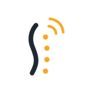
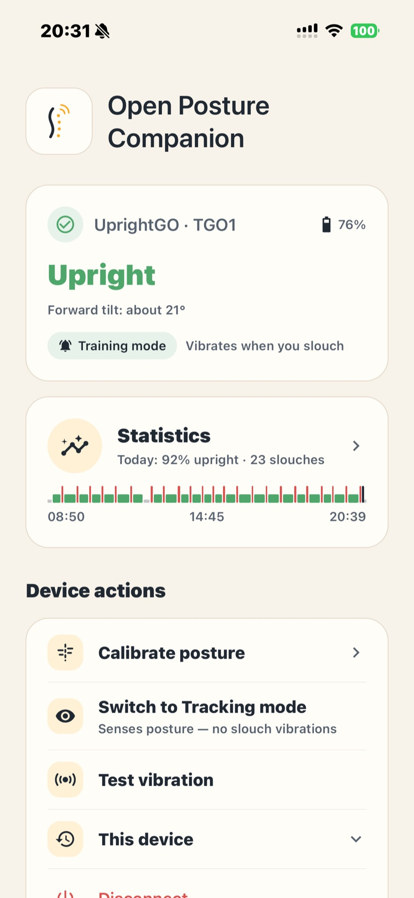
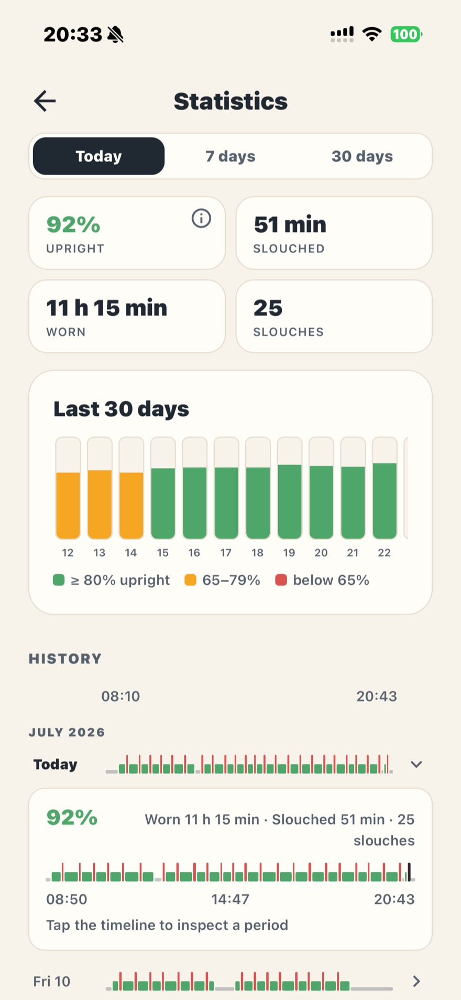
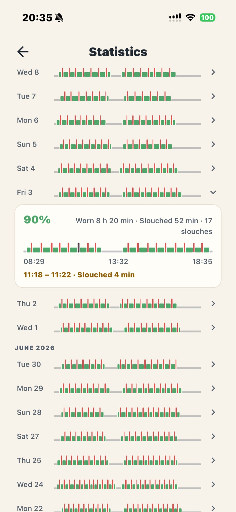

The official app was discontinued. The hardware still works. This independent, open-source companion keeps it useful — connect, calibrate, get gentle posture reminders, and see 30 days of history. Everything stays on your phone.



No account, no cloud, no analytics. Posture data lives on your phone and self-prunes after 30 days. Bluetooth talks only to your device.
Built on a hardware-verified, community reverse-engineered BLE protocol — findings flow back upstream.
A built-in demo mode simulates a device end to end, so you can explore every screen — or contribute — before dusting off your GO.